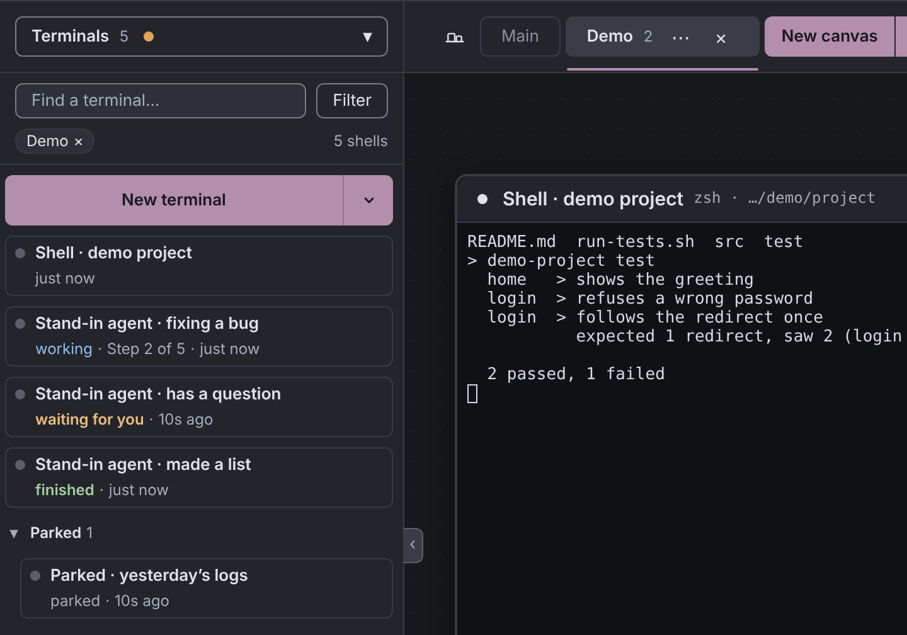

Codex y ChatGPT
Codex es el agente de programación de línea de comandos de OpenAI. Lo instalas e inicias sesión en él tú mismo; en Aubergine se ejecuta en una terminal como cualquier otro programa.
Aún no probado
Nadie ha ejecutado todavía un Codex real en Aubergine. Lo que dice esta página es lo que Aubergine hace por cualquier programa en una terminal y por los comandos aubergine, que está hecho y probado; cómo se comporta Codex ahí no se ha visto. Si lo pruebas, cuéntanos cómo te fue.
Inícialo
Abre una terminal con New terminal, o N, e inicia Codex en ella como harías en cualquier terminal. Aubergine no llama a ningún modelo ni guarda ninguna clave: lo que Codex necesita se lo diste al iniciar sesión en él.
Qué funciona hoy
Todo lo que Aubergine hace por cualquier terminal:


Una al lado de la otra
Tantas terminales como quieras en un solo lienzo, y los lienzos como pestañas.
Estado de los comandos
Con zsh, el título de una terminal muestra que se está ejecutando un comando, y cuál.
Colores, notas y campos
Dale un color a su terminal, lleva una nota con un resumen y un registro, y campos como un ticket o un responsable.
Aparcar
× aparca la terminal: sale del lienzo y sigue en marcha, y Parked (aparcadas) la trae de vuelta.
Una terminal por sí sola
Abre la terminal en una pestaña del navegador propia, con sus detalles y su nota al lado.
Una copia de trabajo
Shell in a folder or a working copy…, o
aubergine new --copy, inicia la terminal en su propio checkout en su propia rama, para que dos agentes nunca editen los mismos archivos.Búsqueda en la salida
⌘Kbusca en lo que ha imprimido cada terminal, y abre la terminal desplazada hasta la coincidencia.
Qué puede decir mediante los comandos
Cada terminal de Aubergine tiene el comando aubergine y una credencial solo para esa terminal. Cualquier programa que esté ahí, Codex incluido, puede usarlos:
aubergine attention waiting "…"Marca la terminal como esperándote, con lo que necesita;
aubergine attention workingyaubergine attention donedicen el resto.aubergine note "…"Añade una línea al registro de notas de la terminal.
aubergine describePone a la terminal el nombre del trabajo y mantiene su resumen;
aubergine link addyaubergine field setañaden los enlaces y campos del trabajo. Lo que escribiste tú gana.aubergine workflow statusLee el paso actual de un flujo de trabajo;
aubergine workflow donelo da por hecho e imprime el siguiente.aubergine task addPropone una tarea para la cola, y
aubergine askte pide algo que solo puede hacer una persona. Ambas cosas esperan en tu lista.
Cómo decírselo
Codex no sabe nada de Aubergine hasta que se lo dicen. Esto imprime cinco líneas para pegar en las instrucciones que tu agente lee al inicio de cada conversación en un proyecto; su propia documentación dice dónde van:
aubergine guide --snippet
Las líneas le dicen que ejecute aubergine guide una vez cuando esté en una terminal de Aubergine, y la guía dice el resto. Aubergine imprime las líneas y nunca las escribe en ningún archivo.
Si tu agente puede iniciar un servidor MCP, aubergine mcp ofrece lo mismo como herramientas; dentro de una terminal de Aubergine no necesita dirección ni token para el trabajo propio de la terminal.
Hecho hoy solo para Claude Code
Lo que Aubergine hace por sí mismo para un agente está hecho para Claude Code. Para Codex, hoy:
- No está en el menú New terminal: lo inicias tú en una terminal.
- Aubergine no lo ve como un agente: no se marca como esperando ni terminado por sí solo, solo cuando ejecuta
aubergine attention. - No se escribe nada para él: un flujo de trabajo iniciado en su terminal no escribe nada y muestra la línea para que se la des tú, y no se le anuncia un resumen ni un mensaje.
- La cola no le da ninguna tarea: una tarea solo va a una terminal donde se ve un agente y está libre.
- No hay Resume agent, ni lista de conversaciones pasadas, ni lista de cómo está configurado, ni diálogo para las herramientas de Aubergine.
aubergine moveyaubergine here --claudesolo traen Claude Code.- No se le recuerda que ponga nombre a su terminal ni que mantenga un resumen.
Todo eso está en la página de Claude Code.
ChatGPT en un navegador
ChatGPT en una pestaña del navegador es una página web, no un programa en una terminal, así que no se ejecuta en el lienzo.
Aubergine no está afiliado a OpenAI. Codex y ChatGPT son marcas registradas de OpenAI.
En marcha en cinco minutos
Necesitas macOS con tmux 3.2 o posterior y Node.js 22 o posterior. brew install tmux node instala ambos.
npm install -g @meatgarden/aubergine